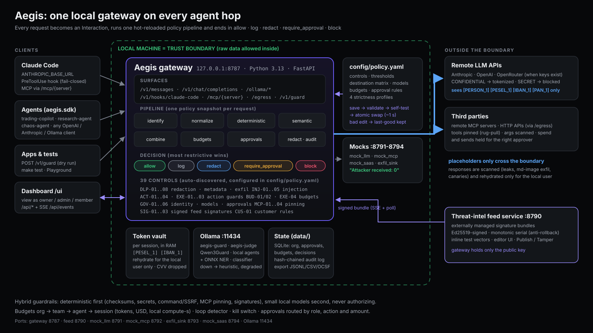

Prompts, files and tool results carry PESELs, IBANs, card numbers and secrets to remote models and third-party MCP servers.
EchoLeak (CVE-2025-32711): zero-click exfiltration via a markdown image
A poisoned README, web page or MCP tool description redirects the agent (OWASP ASI01).
MCP tool poisoning · postmark-mcp BCC backdoor
One runaway agent burns tokens or local GPU time; framework step limits are per framework, not per organization (LLM06:2026).
Agents buy, write to production or email externally with no human approval (LLM03:2026). And nobody can prove what happened.
LiteLLM 1.82.7–1.82.8 PyPI compromise

ANTHROPIC_BASE_URL + fail-closed PreToolUse hook + MCP via /mcp/{server}, from one demo settings profile (make claude), nothing machine-wide.curl | sh), SSRF guardfail_mode: model down → deterministic-only + degraded flag, never silent passkilled)| Agent purchase ≤ $20 | sponsor |
| $50 MarketPulse subscription | admin |
| $480 GPU reservation | owner |
| > $1,000 | owner + admin |
| > $5,000 | blocked |
| Read a PII table | admin |
| Read card data | never |
| Production DB write | owner |
| Team budget +25 % / ×2.5 | admin / owner |
| Disable a critical control | owner |
config/policy.yamlSpend vs budget by team, blocked interactions, cost avoided, approvals.
Live stream: control, score vs threshold, redacted evidence, policy + feed version, Wire view.
Append-only, hash-chained, redacted at write time. Export JSONL · CSV · OCSF. Prometheus /metrics, Server-Timing.
make testmake benchData plane local: a sidecar per developer or agent host, because redaction must happen before egress. Control plane central: policy via GitOps with the same self-test gate, signed feed, approvals, audit to the SIEM.
Stateless workers, Postgres for org and approvals, Redis/Lua for atomic multi-level budget reservation (designed). Can sit behind an open-source gateway as its guard webhook. Standards: OWASP ACS, OCSF, OpenTelemetry GenAI.
GDPR minimisation & pseudonymisation · PCI DSS v4.0.1 (no stored CVV, masked PAN) · EU AI Act logging & human oversight · DORA third-party register & exit levers. Supports, does not certify.
make setup && make up → http://127.0.0.1:8787/ui · Playground · edit config/policy.yaml · publish a feed signature · make test · [PUBLIC REPO URL]